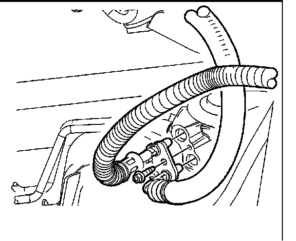
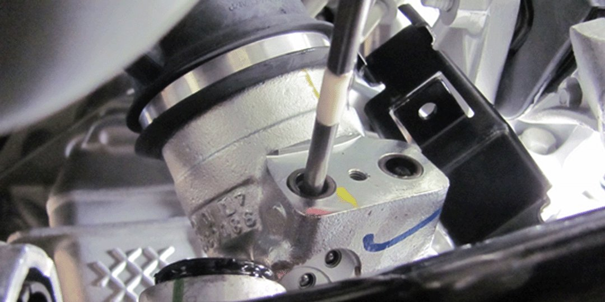
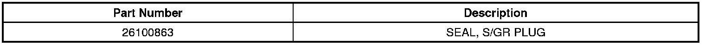
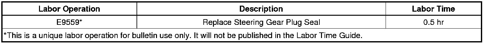

Steering - Fluid Leak at Hose Connection to Rack
TECHNICALBulletin No.: 12-02-32-001A
Date: February 21, 2013
Subject: Hydraulic Power Steering Leak at Hose Connection to Steering Rack
Models:
2007-2013 Cadillac Escalade Models
2007-2013 Chevrolet Avalanche, Silverado, Suburban, Tahoe
2007-2013 GMC Sierra, Yukon Models
Supercede:
This bulletin is being revised to add the 2013 model year and change the tool part number in the Correction section. Please discard Corporate Bulletin Number 12-02-32-001 (Section 02 - Steering).
Condition
Some customers may comment on a fluid leak under the front of the vehicle. Upon further investigation, the technician may find fluid leaking from the power steering hose connection at the rack.
Based on parts returned to the Warranty Parts Center (WPC), replacement of both hose-to-rack "duckbill type" seals has corrected the condition. Replacement of the rack is not necessary for this issue.

Diagnostic Information
Important
All potential leaks should be completely cleaned and identified before attempting to repair or replace any power steering components.
1. Start diagnosis by inspecting the fluid level in the power steering reservoir. If the fluid level is NOT low, a careful analysis of the condition is necessary as it may involve a different type of fluid leak.
2. Visually inspect the area where the hose connection occurs.
3. Before the next step, check the bolt securing the hoses to the steering gear for proper torque (12 Nm or 126 lb in).
4. Clean the area around the connections, joints and seals with engine degreaser or equivalent.
5. Add fluorescent dye (such as Kent Moore GE 28431-6) to the power steering fluid.
6. Start the vehicle and allow the power steering system to reach normal operating temperatures.
7. Turn the steering wheel to the stops in each direction while bumping the steering wheel against the stops 3-4 times. This will build maximum steering system pressure and help identify the source of the leak if present.
Caution
DO NOT hold the steering wheel against the stops for more than 5 seconds as this will damage the power steering pump.
8. Verify the source of the leak is actually the hose connection to the power steer rack.
9. If the source of the leak is from the hose to power steering rack connection, remove the bolt securing the hoses and replace the seals to correct the leak. Replacement of the power steering rack is not necessary to correct the condition.
Correction
1. If not already done, remove the chip cover from the truck frame, exposing the hose/gear connection.
2. Remove the bolt fastening the connector plate to gear housing using an 8 mm hex socket and ratcheting socket wrench.
3. Grasp the hose tubes, one in each hand, and pull out from the connection, wiggling slightly as you pull back.

4. If the seals remain in the gear housing, remove them using the Kent Moore J-42640.
Tip
Do not utilize a screwdriver or any other sharp ended tool to remove the seals since such a tool could damage the housing bore.
5. Wipe the gear housing plate connection surface clean of oil and any debris. Place the replacement seal, P/N 26100863, in the counterbore and seat using the J-42640. Tap into place until the seal is firmly against the bottom of the counterbore. Do this for both ports.
6. Grasp the hose tubes and align to the ports. Insert the tube ends until you feel them "snug-up" in the seals. (Note: there will be a gap between the connection plate and the gear housing.) Do not allow the tube ends to come back out of the housing ports.
7. Align the connection plate bolt through the hole in the connection plate. Insert the bolt to the gear housing threaded hole and hand start.
8. Drive the bolt into the housing the remainder of the way utilizing the hex socket and ratcheting wrench. This will draw the hose tube ends into the ports and seat the connection plate.
Tighten
Tighten the bolt to 12 Nm (106 lb in).
9. Start the engine and exercise the steering system several times to bring the oil to operating temperature and inspect connection for leaks.
10. If no leak is present, replace the chip cover and return the vehicle to the customer.
11. If a leak presents itself, replace the hose assembly. Do not re-use the duckbill seals.
Parts Information

Warranty Information

For vehicles repaired under warranty, use the table.

Disclaimer